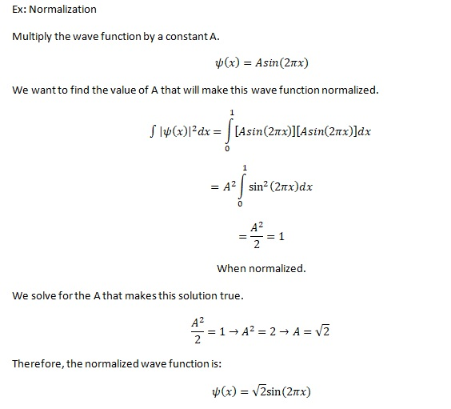
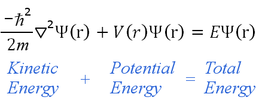

Wave functions contain all the information that can be known about a system and are used to represent the state of a physical system. Thus, a wave function, generally speaking, has real parts and imaginary parts. In coordinate space, a particle contains a wave function that represents the position of the particle at a given time:
In 1-Dimension: ψ=(x,t)
In 2-Dimensions: ψ=(x,y,t)
In 3-Dimentions: ψ=(x,y,z,t)
Even particles within N dimensions (where N = 1,2,3...,∞) can be repersented with a wave equation:
ψ = ( x1, x2, ... , xN ; y1, y2, ... , yN ; z1, z2, ... , zN ; t )
As discussed in the Introduction to Quantum Mechanics lesson, particles are measured by probability. Probability is repersented by a real number between 0 and 1. A measurement of probability 0 is an impossible outcome since the particle must be somewhere, and a probability of 1 is a certian outcome, meaning that there is a 100% chance the particle is at a given location or in a particular state. Looking at the simplest probability function using a 1-D wave function, normalization of a wave function means finding the form of the wave function that makes the following statement:
P(x,t) = ∫ |ψ(x,t)|2 dx = 1
where
|ψ(x,t)|2 = ψ(x,t)*ψ(x,t) or ρ(x,t)
True.
Essentially, normalizing sets up a case where there is a 100% probability (P = 1) of a particle's location in a given range of space, indicated by the boundaries of the integral above that acts on the wave function. This may mean that solving for some constant related to the above constraint is required.
An example of normalization can be seen below:
With the knowledge of wave functions and normalization of said functions, we can now introduce The Born interpretation of probabilities. This interpertation uses the probability function from above and a given region ( a < x < b ) to calculate the probability of finding the particle within that region.
Now with the understanding of probability and normalization of wave functions, we can introduce the Time-Independent Schrödinger Equation:
The Schrödinger Equation, also sometimes known as Schrödinger's Wave Equation, is a partial differential equation. Essentially, it is:
Kinetic Energy + Potential Energy = Total Energy (Energy Conservation)
It uses energy conservation in order to find out information about an electron's behaviour and its bond to a nucleus. The Schrödinger Equation is able to do this by allowing us to calculate the electron's wave function. By calculating the electron's wave equation, we are now able to obtain the electron's energy levels, quantum numbers, and the shapes and orientations of all the orbitals that characterize the electrons in an atom. In the equation above, the variables given represent:
ℏ = h / 2π, where h = 6.626 x 10-34 (J•s) (Planck's Constant)
m = electron mass (9.109 x 10-31 kg)
∇2 = Laplacian Operator (Laplacian Operator)
ψ = the wave function
V = potential energy
E = energy eigenvalue (Energy eigenvalue)
r = x (the position variable) → (This applies to the 1-D case only)
With the Time-Independent Schrödinger Equation and the rest of the knowledge on wave functions from above, we are now ready to tackle the "Particle in a Box" problem.